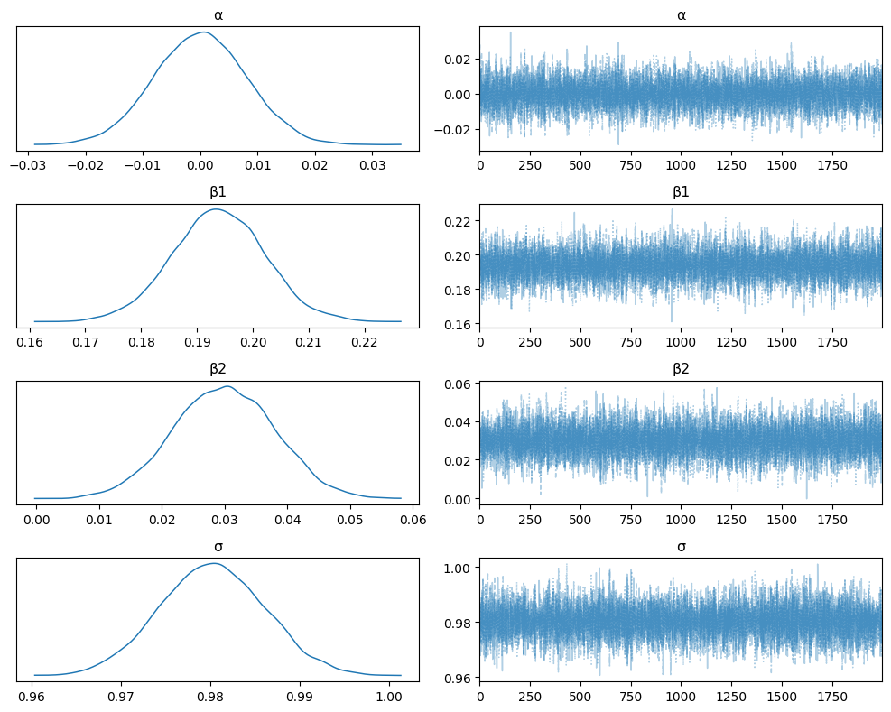
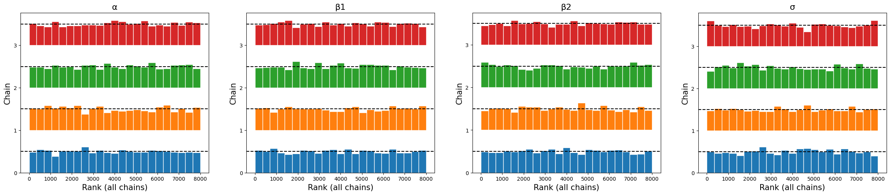
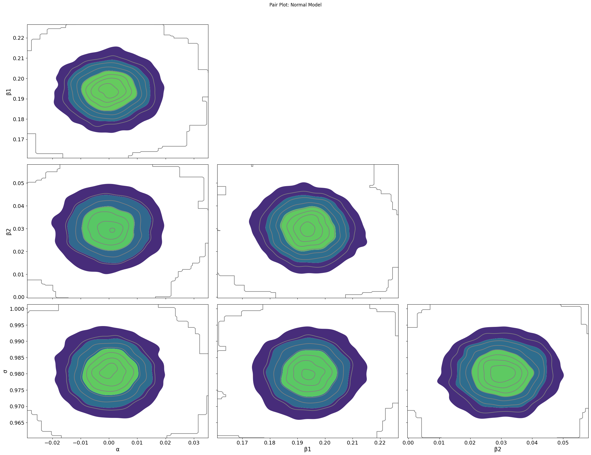
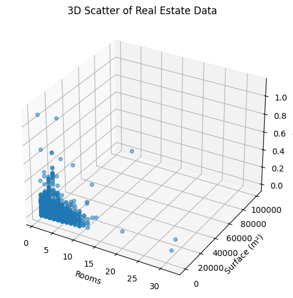
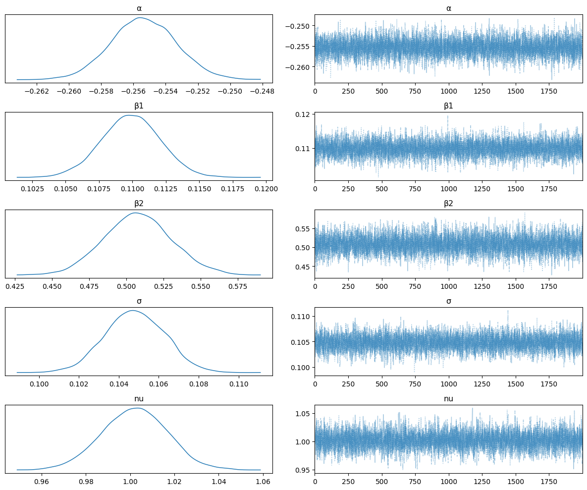
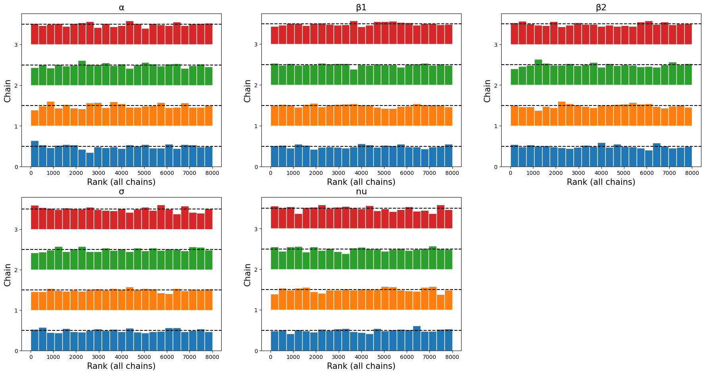
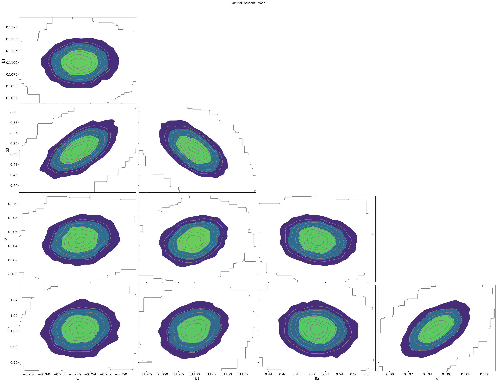
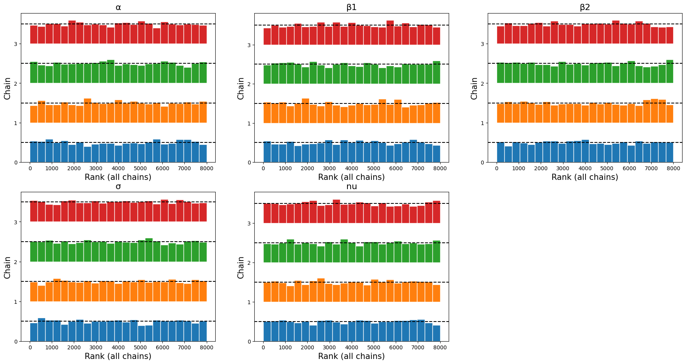
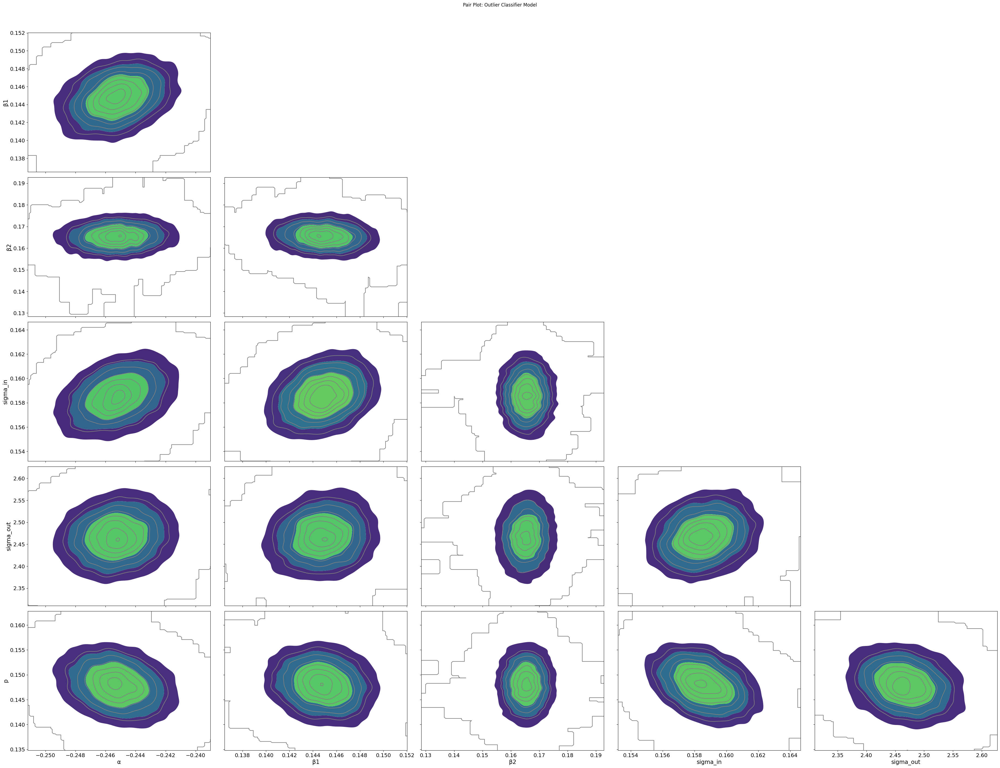

Undral Ganbaatar
March 1, 2025
# There are 5 files that have been concatenated into one file.
import pandas as pd
# Directly reference the combined dataset
combined_file_path = "/Users/undralganbaatar/Downloads/combined.csv"
# Load the dataset
df = pd.read_csv(combined_file_path)
print("Combined dataset loaded successfully!")
print(df.info()) # Display dataset structure
Combined dataset loaded successfully! <class 'pandas.core.frame.DataFrame'> RangeIndex: 43029 entries, 0 to 43028 Data columns (total 16 columns): # Column Non-Null Count Dtype --- ------ -------------- ----- 0 operation 43029 non-null object 1 property_type 43029 non-null object 2 place_with_parent_names 43029 non-null object 3 lat-lon 34734 non-null object 4 price 38073 non-null float64 5 currency 38072 non-null object 6 price_aprox_local_currency 38073 non-null float64 7 price_aprox_usd 38073 non-null float64 8 surface_total_in_m2 29871 non-null float64 9 surface_covered_in_m2 36420 non-null float64 10 price_usd_per_m2 24449 non-null float64 11 price_per_m2 32642 non-null float64 12 floor 6505 non-null float64 13 rooms 23806 non-null float64 14 expenses 4452 non-null float64 15 properati_url 43029 non-null object dtypes: float64(10), object(6) memory usage: 5.3+ MB None
import warnings
warnings.filterwarnings("ignore")print(f"Original data: {df.shape[0]} rows")Original data: 43029 rows
# Remove rows where 'price', 'rooms', or 'surface_total_in_m2' have NaN values
df = df.dropna(subset=['price', 'rooms', 'surface_total_in_m2'])
print(f"Cleaned data: {df.shape[0]} rows")
Cleaned data: 14200 rows
import pymc as pm
import numpy as np
import arviz as az
import matplotlib.pyplot as plt
# Extract independent and dependent variables
y = df["price"].values # Dependent variable
x1 = df["rooms"].values # Independent variable 1
x2 = df["surface_total_in_m2"].values # Independent variable 2
# Standardizing the data
y_mean, y_std = y.mean(), y.std()
x1_mean, x1_std = x1.mean(), x1.std()
x2_mean, x2_std = x2.mean(), x2.std()
y_scaled = (y - y_mean) / y_std
x1_scaled = (x1 - x1_mean) / x1_std
x2_scaled = (x2 - x2_mean) / x2_stdn = len(y_scaled)
with pm.Model() as model_normal:
pm.Data("obs_idx", np.arange(n), dims="obs_id")
# Priors for intercept and slopes
α = pm.Normal("α", mu=0, sigma=5) # Intercept
β1 = pm.Normal("β1", mu=0.2, sigma=0.5) # Slope for rooms
β2 = pm.Normal("β2", mu=0.3, sigma=0.3) # Slope for surface_total_in_m2
σ = pm.HalfNormal("σ", sigma=1) # Noise term
# Linear model
mu = α + β1 * x1_scaled + β2 * x2_scaled
# Normal likelihood
y_obs = pm.Normal("y_obs", mu=mu, sigma=σ, observed=y_scaled, dims="obs_id")
# Sample from the posterior
trace_normal = pm.sample(
2000,
return_inferencedata=True,
idata_kwargs={"log_likelihood": True}
)
# Plot posterior distributions
az.plot_trace(trace_normal, combined=True, figsize=(10, 8))
# Use tight layout to fix overlapping text
plt.tight_layout()
plt.show()
Initializing NUTS using jitter+adapt_diag... Multiprocess sampling (4 chains in 4 jobs) NUTS: [α, β1, β2, σ]
Output()
Sampling 4 chains for 1_000 tune and 2_000 draw iterations (4_000 + 8_000 draws total) took 2 seconds.

# Get summary statistics
summary = az.summary(trace_normal, round_to=2)
print(summary)
az.plot_rank(trace_normal)
plt.show()mean sd hdi_3% hdi_97% mcse_mean mcse_sd ess_bulk ess_tail r_hat α 0.00 0.01 -0.02 0.01 0.0 0.0 12585.22 5756.30 1.0 β1 0.19 0.01 0.18 0.21 0.0 0.0 14123.38 6489.76 1.0 β2 0.03 0.01 0.01 0.04 0.0 0.0 14275.48 6624.56 1.0 σ 0.98 0.01 0.97 0.99 0.0 0.0 15019.70 6633.02 1.0

az.plot_pair(
trace_normal,
var_names=["α", "β1", "β2", "σ"],
kind="kde",
divergences=True, # highlight divergent samples if any
)
plt.suptitle("Pair Plot: Normal Model", y=1.02)
plt.tight_layout()
plt.show()
from mpl_toolkits.mplot3d import Axes3D
fig = plt.figure(figsize=(8,6))
ax = fig.add_subplot(111, projection='3d')
ax.scatter(x1, x2, y, alpha=0.5)
ax.set_xlabel("Rooms")
ax.set_ylabel("Surface (m²)")
ax.set_zlabel("Price")
plt.title("3D Scatter of Real Estate Data")
plt.show()
import seaborn as sns
df_plot = df[["rooms", "surface_total_in_m2", "price"]]
sns.pairplot(df_plot, diag_kind="kde")
plt.show()

with pm.Model() as model_student:
pm.Data("obs_idx", np.arange(n), dims="obs_id")
α = pm.Normal("α", mu=0, sigma=5)
β1 = pm.Normal("β1", mu=0.2, sigma=0.5)
β2 = pm.Normal("β2", mu=0.3, sigma=0.3)
σ = pm.HalfNormal("σ", sigma=1)
# Degrees of freedom for Student T (must be > 0)
nu = pm.Exponential("nu", lam=1/30)
mu = α + β1 * x1_scaled + β2 * x2_scaled
# Student T likelihood
y_obs = pm.StudentT("y_obs", nu=nu, mu=mu, sigma=σ, observed=y_scaled, dims="obs_id")
trace_student = pm.sample(
2000,
return_inferencedata=True,
idata_kwargs={"log_likelihood": True}
)
# Posterior plots
az.plot_trace(trace_student, var_names=["α", "β1", "β2", "σ", "nu"], combined=True)
plt.tight_layout()
plt.show()
Initializing NUTS using jitter+adapt_diag... Multiprocess sampling (4 chains in 4 jobs) NUTS: [α, β1, β2, σ, nu]
Output()
Sampling 4 chains for 1_000 tune and 2_000 draw iterations (4_000 + 8_000 draws total) took 11 seconds.

summary = az.summary(trace_student, round_to=2)
print(summary)
az.plot_rank(trace_student)
plt.show()mean sd hdi_3% hdi_97% mcse_mean mcse_sd ess_bulk ess_tail r_hat α -0.26 0.00 -0.26 -0.25 0.0 0.0 6658.82 5674.67 1.0 β1 0.11 0.00 0.11 0.11 0.0 0.0 6409.94 6218.60 1.0 β2 0.51 0.02 0.46 0.55 0.0 0.0 5052.54 4981.52 1.0 σ 0.10 0.00 0.10 0.11 0.0 0.0 6238.34 6140.00 1.0 nu 1.00 0.01 0.97 1.03 0.0 0.0 6068.02 5700.67 1.0

az.plot_pair(
trace_student,
var_names=["α", "β1", "β2", "σ", "nu"],
kind="kde",
divergences=True,
)
plt.suptitle("Pair Plot: StudentT Model", y=1.02)
plt.tight_layout()
plt.show()

import pytensor.tensor as pt
with pm.Model() as outlier_classifier_model:
pm.Data("obs_idx", np.arange(n), dims="obs_id")
α = pm.Normal("α", mu=0, sigma=5)
β1 = pm.Normal("β1", mu=0.2, sigma=0.5)
β2 = pm.Normal("β2", mu=0.3, sigma=0.3)
mu = α + β1 * x1_scaled + β2 * x2_scaled
# Noise parameters for inliers/outliers
# We'll allow a base sigma_in and an additional sigma_out for outliers
sigma_in = pm.HalfNormal("sigma_in", sigma=0.5)
sigma_out = pm.HalfNormal("sigma_out", sigma=2)
# This array has shape [2], index 0 for inlier, 1 for outlier
sigmas = pt.as_tensor_variable([sigma_in, sigma_in + sigma_out])
# Probability that a given point is an outlier
p = pm.Uniform("p", lower=0, upper=0.5)
# Bernoulli indicator for each data point => 0=inlier, 1=outlier
is_outlier = pm.Bernoulli("is_outlier", p=p, dims="obs_id")
# Likelihood: pick sigma_in or sigma_in+sigma_out for each point
pm.Normal(
"y_obs",
mu=mu,
sigma=sigmas[is_outlier],
observed=y_scaled,
dims="obs_id"
)
# Sample from the posterior
trace_outlier = pm.sample(
2000,
return_inferencedata=True,
idata_kwargs={"log_likelihood": True}
)
# Posterior analysis
az.plot_trace(
trace_outlier,
var_names=["α", "β1", "β2", "sigma_in", "sigma_out", "p", "is_outlier"],
combined=True
)
plt.tight_layout()
plt.show()
Multiprocess sampling (4 chains in 4 jobs) CompoundStep >NUTS: [α, β1, β2, sigma_in, sigma_out, p] >BinaryGibbsMetropolis: [is_outlier]
Output()
summary = az.summary(trace_outlier, round_to=2)
print(summary)
az.plot_rank(trace_student)
plt.show()/Library/Frameworks/Python.framework/Versions/3.12/lib/python3.12/site-packages/arviz/stats/diagnostics.py:596: RuntimeWarning: invalid value encountered in scalar divide (between_chain_variance / within_chain_variance + num_samples - 1) / (num_samples) /Library/Frameworks/Python.framework/Versions/3.12/lib/python3.12/site-packages/arviz/stats/diagnostics.py:596: RuntimeWarning: invalid value encountered in scalar divide (between_chain_variance / within_chain_variance + num_samples - 1) / (num_samples) /Library/Frameworks/Python.framework/Versions/3.12/lib/python3.12/site-packages/arviz/stats/diagnostics.py:596: RuntimeWarning: invalid value encountered in scalar divide (between_chain_variance / within_chain_variance + num_samples - 1) / (num_samples) /Library/Frameworks/Python.framework/Versions/3.12/lib/python3.12/site-packages/arviz/stats/diagnostics.py:596: RuntimeWarning: invalid value encountered in scalar divide (between_chain_variance / within_chain_variance + num_samples - 1) / (num_samples) /Library/Frameworks/Python.framework/Versions/3.12/lib/python3.12/site-packages/arviz/stats/diagnostics.py:596: RuntimeWarning: invalid value encountered in scalar divide (between_chain_variance / within_chain_variance + num_samples - 1) / (num_samples) /Library/Frameworks/Python.framework/Versions/3.12/lib/python3.12/site-packages/arviz/stats/diagnostics.py:596: RuntimeWarning: invalid value encountered in scalar divide (between_chain_variance / within_chain_variance + num_samples - 1) / (num_samples) /Library/Frameworks/Python.framework/Versions/3.12/lib/python3.12/site-packages/arviz/stats/diagnostics.py:596: RuntimeWarning: invalid value encountered in scalar divide (between_chain_variance / within_chain_variance + num_samples - 1) / (num_samples) /Library/Frameworks/Python.framework/Versions/3.12/lib/python3.12/site-packages/arviz/stats/diagnostics.py:596: RuntimeWarning: invalid value encountered in scalar divide (between_chain_variance / within_chain_variance + num_samples - 1) / (num_samples) /Library/Frameworks/Python.framework/Versions/3.12/lib/python3.12/site-packages/arviz/stats/diagnostics.py:596: RuntimeWarning: invalid value encountered in scalar divide (between_chain_variance / within_chain_variance + num_samples - 1) / (num_samples) /Library/Frameworks/Python.framework/Versions/3.12/lib/python3.12/site-packages/arviz/stats/diagnostics.py:596: RuntimeWarning: invalid value encountered in scalar divide (between_chain_variance / within_chain_variance + num_samples - 1) / (num_samples) /Library/Frameworks/Python.framework/Versions/3.12/lib/python3.12/site-packages/arviz/stats/diagnostics.py:596: RuntimeWarning: invalid value encountered in scalar divide (between_chain_variance / within_chain_variance + num_samples - 1) / (num_samples) /Library/Frameworks/Python.framework/Versions/3.12/lib/python3.12/site-packages/arviz/stats/diagnostics.py:596: RuntimeWarning: invalid value encountered in scalar divide (between_chain_variance / within_chain_variance + num_samples - 1) / (num_samples) /Library/Frameworks/Python.framework/Versions/3.12/lib/python3.12/site-packages/arviz/stats/diagnostics.py:596: RuntimeWarning: invalid value encountered in scalar divide (between_chain_variance / within_chain_variance + num_samples - 1) / (num_samples) /Library/Frameworks/Python.framework/Versions/3.12/lib/python3.12/site-packages/arviz/stats/diagnostics.py:596: RuntimeWarning: invalid value encountered in scalar divide (between_chain_variance / within_chain_variance + num_samples - 1) / (num_samples) /Library/Frameworks/Python.framework/Versions/3.12/lib/python3.12/site-packages/arviz/stats/diagnostics.py:596: RuntimeWarning: invalid value encountered in scalar divide (between_chain_variance / within_chain_variance + num_samples - 1) / (num_samples) /Library/Frameworks/Python.framework/Versions/3.12/lib/python3.12/site-packages/arviz/stats/diagnostics.py:596: RuntimeWarning: invalid value encountered in scalar divide (between_chain_variance / within_chain_variance + num_samples - 1) / (num_samples) /Library/Frameworks/Python.framework/Versions/3.12/lib/python3.12/site-packages/arviz/stats/diagnostics.py:596: RuntimeWarning: invalid value encountered in scalar divide (between_chain_variance / within_chain_variance + num_samples - 1) / (num_samples) /Library/Frameworks/Python.framework/Versions/3.12/lib/python3.12/site-packages/arviz/stats/diagnostics.py:596: RuntimeWarning: invalid value encountered in scalar divide (between_chain_variance / within_chain_variance + num_samples - 1) / (num_samples) /Library/Frameworks/Python.framework/Versions/3.12/lib/python3.12/site-packages/arviz/stats/diagnostics.py:596: RuntimeWarning: invalid value encountered in scalar divide (between_chain_variance / within_chain_variance + num_samples - 1) / (num_samples) /Library/Frameworks/Python.framework/Versions/3.12/lib/python3.12/site-packages/arviz/stats/diagnostics.py:596: RuntimeWarning: invalid value encountered in scalar divide (between_chain_variance / within_chain_variance + num_samples - 1) / (num_samples) /Library/Frameworks/Python.framework/Versions/3.12/lib/python3.12/site-packages/arviz/stats/diagnostics.py:596: RuntimeWarning: invalid value encountered in scalar divide (between_chain_variance / within_chain_variance + num_samples - 1) / (num_samples) /Library/Frameworks/Python.framework/Versions/3.12/lib/python3.12/site-packages/arviz/stats/diagnostics.py:596: RuntimeWarning: invalid value encountered in scalar divide (between_chain_variance / within_chain_variance + num_samples - 1) / (num_samples) /Library/Frameworks/Python.framework/Versions/3.12/lib/python3.12/site-packages/arviz/stats/diagnostics.py:596: RuntimeWarning: invalid value encountered in scalar divide (between_chain_variance / within_chain_variance + num_samples - 1) / (num_samples) /Library/Frameworks/Python.framework/Versions/3.12/lib/python3.12/site-packages/arviz/stats/diagnostics.py:596: RuntimeWarning: invalid value encountered in scalar divide (between_chain_variance / within_chain_variance + num_samples - 1) / (num_samples) /Library/Frameworks/Python.framework/Versions/3.12/lib/python3.12/site-packages/arviz/stats/diagnostics.py:596: RuntimeWarning: invalid value encountered in scalar divide (between_chain_variance / within_chain_variance + num_samples - 1) / (num_samples) /Library/Frameworks/Python.framework/Versions/3.12/lib/python3.12/site-packages/arviz/stats/diagnostics.py:596: RuntimeWarning: invalid value encountered in scalar divide (between_chain_variance / within_chain_variance + num_samples - 1) / (num_samples) /Library/Frameworks/Python.framework/Versions/3.12/lib/python3.12/site-packages/arviz/stats/diagnostics.py:596: RuntimeWarning: invalid value encountered in scalar divide (between_chain_variance / within_chain_variance + num_samples - 1) / (num_samples) /Library/Frameworks/Python.framework/Versions/3.12/lib/python3.12/site-packages/arviz/stats/diagnostics.py:596: RuntimeWarning: invalid value encountered in scalar divide (between_chain_variance / within_chain_variance + num_samples - 1) / (num_samples) /Library/Frameworks/Python.framework/Versions/3.12/lib/python3.12/site-packages/arviz/stats/diagnostics.py:596: RuntimeWarning: invalid value encountered in scalar divide (between_chain_variance / within_chain_variance + num_samples - 1) / (num_samples) /Library/Frameworks/Python.framework/Versions/3.12/lib/python3.12/site-packages/arviz/stats/diagnostics.py:596: RuntimeWarning: invalid value encountered in scalar divide (between_chain_variance / within_chain_variance + num_samples - 1) / (num_samples) /Library/Frameworks/Python.framework/Versions/3.12/lib/python3.12/site-packages/arviz/stats/diagnostics.py:596: RuntimeWarning: invalid value encountered in scalar divide (between_chain_variance / within_chain_variance + num_samples - 1) / (num_samples) /Library/Frameworks/Python.framework/Versions/3.12/lib/python3.12/site-packages/arviz/stats/diagnostics.py:596: RuntimeWarning: invalid value encountered in scalar divide (between_chain_variance / within_chain_variance + num_samples - 1) / (num_samples) /Library/Frameworks/Python.framework/Versions/3.12/lib/python3.12/site-packages/arviz/stats/diagnostics.py:596: RuntimeWarning: invalid value encountered in scalar divide (between_chain_variance / within_chain_variance + num_samples - 1) / (num_samples) /Library/Frameworks/Python.framework/Versions/3.12/lib/python3.12/site-packages/arviz/stats/diagnostics.py:596: RuntimeWarning: invalid value encountered in scalar divide (between_chain_variance / within_chain_variance + num_samples - 1) / (num_samples) /Library/Frameworks/Python.framework/Versions/3.12/lib/python3.12/site-packages/arviz/stats/diagnostics.py:596: RuntimeWarning: invalid value encountered in scalar divide (between_chain_variance / within_chain_variance + num_samples - 1) / (num_samples) /Library/Frameworks/Python.framework/Versions/3.12/lib/python3.12/site-packages/arviz/stats/diagnostics.py:596: RuntimeWarning: invalid value encountered in scalar divide (between_chain_variance / within_chain_variance + num_samples - 1) / (num_samples) /Library/Frameworks/Python.framework/Versions/3.12/lib/python3.12/site-packages/arviz/stats/diagnostics.py:596: RuntimeWarning: invalid value encountered in scalar divide (between_chain_variance / within_chain_variance + num_samples - 1) / (num_samples) /Library/Frameworks/Python.framework/Versions/3.12/lib/python3.12/site-packages/arviz/stats/diagnostics.py:596: RuntimeWarning: invalid value encountered in scalar divide (between_chain_variance / within_chain_variance + num_samples - 1) / (num_samples) /Library/Frameworks/Python.framework/Versions/3.12/lib/python3.12/site-packages/arviz/stats/diagnostics.py:596: RuntimeWarning: invalid value encountered in scalar divide (between_chain_variance / within_chain_variance + num_samples - 1) / (num_samples) /Library/Frameworks/Python.framework/Versions/3.12/lib/python3.12/site-packages/arviz/stats/diagnostics.py:596: RuntimeWarning: invalid value encountered in scalar divide (between_chain_variance / within_chain_variance + num_samples - 1) / (num_samples) /Library/Frameworks/Python.framework/Versions/3.12/lib/python3.12/site-packages/arviz/stats/diagnostics.py:596: RuntimeWarning: invalid value encountered in scalar divide (between_chain_variance / within_chain_variance + num_samples - 1) / (num_samples) /Library/Frameworks/Python.framework/Versions/3.12/lib/python3.12/site-packages/arviz/stats/diagnostics.py:596: RuntimeWarning: invalid value encountered in scalar divide (between_chain_variance / within_chain_variance + num_samples - 1) / (num_samples) /Library/Frameworks/Python.framework/Versions/3.12/lib/python3.12/site-packages/arviz/stats/diagnostics.py:596: RuntimeWarning: invalid value encountered in scalar divide (between_chain_variance / within_chain_variance + num_samples - 1) / (num_samples) /Library/Frameworks/Python.framework/Versions/3.12/lib/python3.12/site-packages/arviz/stats/diagnostics.py:596: RuntimeWarning: invalid value encountered in scalar divide (between_chain_variance / within_chain_variance + num_samples - 1) / (num_samples) /Library/Frameworks/Python.framework/Versions/3.12/lib/python3.12/site-packages/arviz/stats/diagnostics.py:596: RuntimeWarning: invalid value encountered in scalar divide (between_chain_variance / within_chain_variance + num_samples - 1) / (num_samples) /Library/Frameworks/Python.framework/Versions/3.12/lib/python3.12/site-packages/arviz/stats/diagnostics.py:596: RuntimeWarning: invalid value encountered in scalar divide (between_chain_variance / within_chain_variance + num_samples - 1) / (num_samples) /Library/Frameworks/Python.framework/Versions/3.12/lib/python3.12/site-packages/arviz/stats/diagnostics.py:596: RuntimeWarning: invalid value encountered in scalar divide (between_chain_variance / within_chain_variance + n [Long output truncated in this preview; see original notebook.]
mean sd hdi_3% hdi_97% mcse_mean mcse_sd ess_bulk \
α -0.25 0.00 -0.25 -0.24 0.0 0.0 3778.94
β1 0.14 0.00 0.14 0.15 0.0 0.0 3798.32
β2 0.17 0.00 0.16 0.17 0.0 0.0 6118.98
is_outlier[0] 0.01 0.11 0.00 0.00 0.0 0.0 5613.42
is_outlier[1] 0.01 0.12 0.00 0.00 0.0 0.0 5210.22
... ... ... ... ... ... ... ...
is_outlier[14198] 0.05 0.21 0.00 0.00 0.0 0.0 5843.84
is_outlier[14199] 1.00 0.00 1.00 1.00 0.0 0.0 8000.00
sigma_in 0.16 0.00 0.16 0.16 0.0 0.0 2678.36
sigma_out 2.47 0.04 2.38 2.55 0.0 0.0 4946.23
p 0.15 0.00 0.14 0.15 0.0 0.0 3732.30
ess_tail r_hat
α 5160.39 1.0
β1 5203.99 1.0
β2 5510.17 1.0
is_outlier[0] 5613.42 1.0
is_outlier[1] 5210.22 1.0
... ... ...
is_outlier[14198] 5843.84 1.0
is_outlier[14199] 8000.00 NaN
sigma_in 4558.09 1.0
sigma_out 5671.03 1.0
p 5075.04 1.0
[14206 rows x 9 columns]

az.plot_pair(
trace_outlier,
var_names=["α", "β1", "β2", "sigma_in", "sigma_out", "p"],
kind="kde",
divergences=True,
)
plt.suptitle("Pair Plot: Outlier Classifier Model", y=1.02)
plt.tight_layout()
plt.show()

model_dict = {
"Normal Likelihood": trace_normal,
"StudentT Likelihood": trace_student,
"Outlier Classifier": trace_outlier
}
comp_df = az.compare(model_dict, ic="loo", scale="deviance")
comp_df/Library/Frameworks/Python.framework/Versions/3.12/lib/python3.12/site-packages/arviz/stats/stats.py:1043: RuntimeWarning: overflow encountered in exp weights = 1 / np.exp(len_scale - len_scale[:, None]).sum(axis=1) /Library/Frameworks/Python.framework/Versions/3.12/lib/python3.12/site-packages/numpy/core/_methods.py:49: RuntimeWarning: overflow encountered in reduce return umr_sum(a, axis, dtype, out, keepdims, initial, where) /Library/Frameworks/Python.framework/Versions/3.12/lib/python3.12/site-packages/arviz/stats/stats.py:795: UserWarning: Estimated shape parameter of Pareto distribution is greater than 0.70 for one or more samples. You should consider using a more robust model, this is because importance sampling is less likely to work well if the marginal posterior and LOO posterior are very different. This is more likely to happen with a non-robust model and highly influential observations. warnings.warn(
rank elpd_loo p_loo elpd_diff weight \
Outlier Classifier 0 1701.851629 1386.559989 0.000000 0.999349
Normal Likelihood 1 7766.633154 10.914917 6064.781525 0.000000
StudentT Likelihood 2 7766.831681 11.035886 6064.980052 0.000651
se dse warning scale
Outlier Classifier 355.136640 0.000000 True deviance
Normal Likelihood 422.902338 234.371137 False deviance
StudentT Likelihood 422.905734 234.345122 False deviance